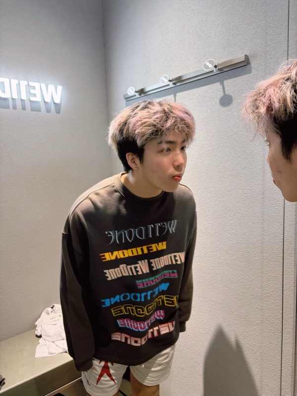

I am a first-year Ph.D. student in Computer Science and Engineering at Lehigh University, working with Prof. Lifang He. My research lies at the intersection of deep learning and medical AI, with a focus on multimodal representation learning, contrastive learning, and parameter-efficient adaptation of large models for brain and medical imaging.
Before joining Lehigh, I received my B.S. in Biomedical Engineering from Shantou University, where I was honored with the Best Thesis Award for my work on clinical-prior–driven lesion detection in digital breast tomosynthesis.
† equal contribution · full list on Google Scholar
Ph.D. in Computer Science and Engineering
Advisor: Prof. Lifang He
B.S. in Biomedical Engineering · Best Thesis Award
Shantou University · Advisor: Prof. Xiangyuan Ma
Hardware & Software R&D Centre, Shenzhen · Advisor: Dr. Mei Li